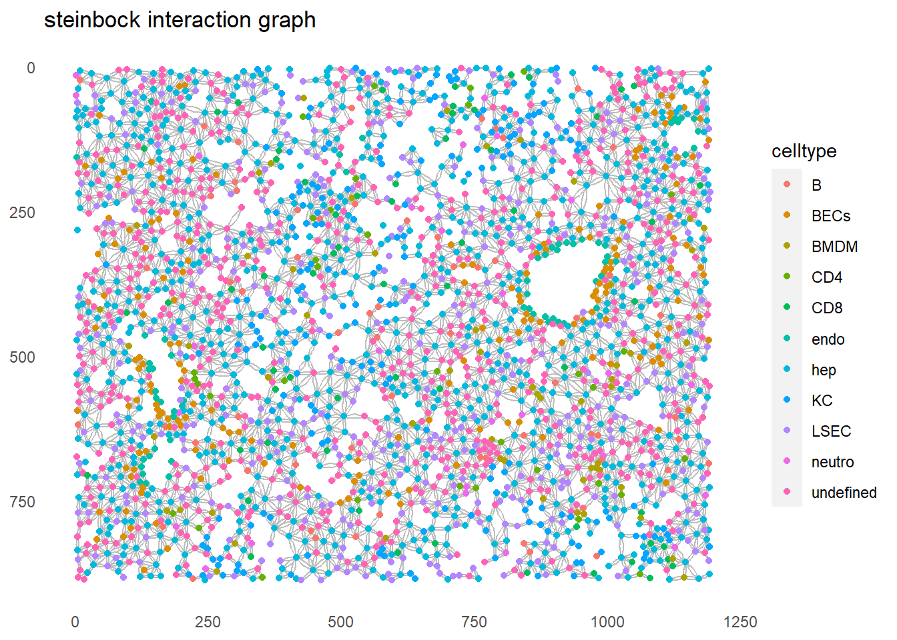

IMC data analysis workflow
Tess Brodie
University of Bern, DBMR, Visceral and Transplantation Surgery lab
Last updated: 2022-08-30
Checks: 5 2
Knit directory: 220707_workflowr/
This reproducible R Markdown analysis was created with workflowr (version 1.7.0). The Checks tab describes the reproducibility checks that were applied when the results were created. The Past versions tab lists the development history.
Great! Since the R Markdown file has been committed to the Git repository, you know the exact version of the code that produced these results.
Great job! The global environment was empty. Objects defined in the global environment can affect the analysis in your R Markdown file in unknown ways. For reproduciblity it’s best to always run the code in an empty environment.
The command set.seed(20220718) was run prior to running
the code in the R Markdown file. Setting a seed ensures that any results
that rely on randomness, e.g. subsampling or permutations, are
reproducible.
Great job! Recording the operating system, R version, and package versions is critical for reproducibility.
- build_spatial_graph
- community_heatmap
- community_plot
- community_setup
- compare_CN_SC
- delaunay_interaction
- expansion_interaction
- filter_SC_bycellnumber
- filter_SC
- interaction_targetexprs
- interactions_heatmap
- interactions_heatmap_patch
- interactions_setup
- KNN_interaction
- knn_interaction_graph
- knn_interaction_heatmap
- lisaClust_heatmap
- lisaClust_plot
- lisaClust_setup
- load-libs
- load data
- neighborhoods_by_expression_heatmap
- neighborhoods_by_exprs
- patch detection
- plot_cell_type_all
- sc_graphs
- SC_graphs_ncellsngroup_color
- session-info-chunk-inserted-by-workflowr
- spatial_context_analysis
- steinbock_interaction
- T cell infiltration
- unnamed-chunk-1
To ensure reproducibility of the results, delete the cache directory
7_spatial_vis_cache and re-run the analysis. To have
workflowr automatically delete the cache directory prior to building the
file, set delete_cache = TRUE when running
wflow_build() or wflow_publish().
Using absolute paths to the files within your workflowr project makes it difficult for you and others to run your code on a different machine. Change the absolute path(s) below to the suggested relative path(s) to make your code more reproducible.
| absolute | relative |
|---|---|
| C:/Users/IMC Platform laptop/Users2/Tess/SteinbockCellSegmentation/220707/220707_workflowr | . |
Great! You are using Git for version control. Tracking code development and connecting the code version to the results is critical for reproducibility.
The results in this page were generated with repository version db869f5. See the Past versions tab to see a history of the changes made to the R Markdown and HTML files.
Note that you need to be careful to ensure that all relevant files for
the analysis have been committed to Git prior to generating the results
(you can use wflow_publish or
wflow_git_commit). workflowr only checks the R Markdown
file, but you know if there are other scripts or data files that it
depends on. Below is the status of the Git repository when the results
were generated:
Ignored files:
Ignored: .Rhistory
Ignored: .Rproj.user/
Ignored: analysis/.Rhistory
Ignored: analysis/0_prep_data_cache/
Ignored: analysis/1_QC_mask_cache/
Ignored: analysis/2_batch_effect_correction_cache/
Ignored: analysis/3_dim_red_cache/
Ignored: analysis/4_cell_annotation_cache/
Ignored: analysis/5_sc_vis_cache/
Ignored: analysis/6_img_vis_cache/
Ignored: analysis/7_spatial_vis_cache/
Untracked files:
Untracked: Rplot.png
Untracked: UMAP_correctedvalues.pdf
Untracked: Umap_celltype_overlay.pdf
Untracked: allchannels_histogram.pdf
Untracked: allchannels_multidimplot.pdf
Untracked: alldata_lsecs.rds
Untracked: data/Joseentraining/
Untracked: data/Macro.ijm.ijm.ijm
Untracked: data/cellpose png masks/
Untracked: data/cluster_annotation.png
Untracked: data/cluster_annotation.xlsx
Untracked: data/fiji composite images/
Untracked: data/images.csv
Untracked: data/images.rds
Untracked: data/img/
Untracked: data/intensities/
Untracked: data/masks.rds
Untracked: data/masks/
Untracked: data/neighbors/
Untracked: data/panel.csv
Untracked: data/raw/
Untracked: data/regionprops/
Untracked: data/sample_metadata.xlsx
Untracked: data/spe.rds
Untracked: gated_cells/
Untracked: gated_cells2/
Untracked: marker_umap_corrected.png
Untracked: output/spe0.rds
Untracked: output/spe1.rds
Untracked: output/spe2.rds
Untracked: output/spe3.rds
Untracked: output/spe4.rds
Unstaged changes:
Modified: analysis/_site.yml
Deleted: analysis/about.Rmd
Deleted: analysis/license.Rmd
Note that any generated files, e.g. HTML, png, CSS, etc., are not included in this status report because it is ok for generated content to have uncommitted changes.
These are the previous versions of the repository in which changes were
made to the R Markdown (analysis/7_spatial_vis.Rmd) and
HTML (docs/7_spatial_vis.html) files. If you’ve configured
a remote Git repository (see ?wflow_git_remote), click on
the hyperlinks in the table below to view the files as they were in that
past version.
| File | Version | Author | Date | Message |
|---|---|---|---|---|
| Rmd | db869f5 | tessbrodie | 2022-08-30 | Publish the initial files for myproject |
Spatial analysis
Load packages
library(SpatialExperiment)
library(imcRtools)
library(ggplot2)
library(viridis)
library(igraph)
library(pheatmap)
library(tidyverse)
library(lisaClust)
library(spicyR)
library(circlize)
library(RColorBrewer)
library(cytomapper)
library(patchwork)
library(tidyverse)
library(scales)Load data
spe <- readRDS(file.path("output", "spe4.rds"))Spatial interaction graphs
spe <- buildSpatialGraph(spe, img_id = "sample_id", type = "knn", k = 20)
spe <- buildSpatialGraph(spe, img_id = "sample_id", type = "expansion", threshold = 20)
spe <- buildSpatialGraph(spe, img_id = "sample_id", type = "delaunay", max_dist = 50)
colPairNames(spe)[1] "neighborhood" "knn_interaction_graph"
[3] "expansion_interaction_graph" "delaunay_interaction_graph" # steinbock interaction graph
plotSpatial(spe[,spe$sample_id == "1"],
node_color_by = "celltype",
img_id = "sample_id",
draw_edges = TRUE,
colPairName = "neighborhood",
nodes_first = FALSE,
edge_color_fix = "grey") +
#scale_color_manual(values = metadata(spe)$color_vectors$celltype) +
ggtitle("steinbock interaction graph")
# knn interaction graph
plotSpatial(spe[,spe$sample_id == "1"],
node_color_by = "celltype",
img_id = "sample_id",
draw_edges = TRUE,
colPairName = "knn_interaction_graph",
nodes_first = FALSE,
edge_color_fix = "grey") +
#scale_color_manual(values = metadata(spe)$color_vectors$celltype) +
ggtitle("knn interaction graph")# expansion interaction graph
plotSpatial(spe[,spe$sample_id == "1"],
node_color_by = "celltype",
img_id = "sample_id",
draw_edges = TRUE,
colPairName = "expansion_interaction_graph",
nodes_first = FALSE,
directed = FALSE,
edge_color_fix = "grey") +
#scale_color_manual(values = metadata(spe)$color_vectors$celltype) +
ggtitle("expansion interaction graph")# delaunay interaction graph
plotSpatial(spe[,spe$sample_id == "1"],
node_color_by = "celltype",
img_id = "sample_id",
draw_edges = TRUE,
colPairName = "delaunay_interaction_graph",
nodes_first = FALSE,
edge_color_fix = "grey") +
#scale_color_manual(values = metadata(spe)$color_vectors$celltype) +
ggtitle("delaunay interaction graph")plotSpatial(spe[,spe$sample_id == "1"],
node_color_by = "E-cadherin",
assay_type = "exprs",
img_id = "sample_id",
draw_edges = TRUE,
colPairName = "expansion_interaction_graph",
nodes_first = FALSE,
node_size_by = "area",
directed = FALSE,
edge_color_fix = "grey") +
scale_size_continuous(range = c(0.1, 2)) +
ggtitle("E-cadherin expression")Plot cell types
plotSpatial(spe,
node_color_by = "celltype",
img_id = "sample_id",
node_size_fix = 0.5) #scale_color_manual(values = metadata(spe)$color_vectors$celltype)Spatial community analysis
set.seed(20220718)
# Spatial community detection - tumor
#tumor_spe <- spe[,spe$celltype == "Tumor"]
#We do all and do not separate regions like they do
gr <- graph_from_data_frame(as.data.frame(colPair(spe, "neighborhood")),
directed = FALSE,
vertices = data.frame(index = seq_len(ncol(spe))))
cl_comm <- cluster_louvain(gr)
comm <- paste0("Comm_", membership(cl_comm))
comm[membership(cl_comm) %in% which(sizes(cl_comm) < 10)] <- NA
names(comm) <- colnames(spe)
# Spatial community detection - non-tumor
#stroma_spe <- spe[,spe$celltype != "Tumor"]
#gr <- graph_from_data_frame(as.data.frame(colPair(stroma_spe, "neighborhood")),
# directed = FALSE,
# vertices = data.frame(index = seq_len(ncol(stroma_spe))))
#cl_comm <- cluster_louvain(gr)
#comm_stroma <- paste0("Stroma_", membership(cl_comm))
#comm_stroma[membership(cl_comm) %in% which(sizes(cl_comm) < 10)] <- NA
#names(comm_stroma) <- colnames(stroma_spe)
#comm <- c(comm_tumor, comm_stroma)
spe$spatial_community <- comm[colnames(spe)]plotSpatial(spe,
node_color_by = "spatial_community",
img_id = "sample_id",
node_size_fix = 0.5) +
theme(legend.position = "none") +
ggtitle("Spatial communities") +
scale_color_manual(values = rev(colors()))for_plot <- prop.table(table(spe$spatial_community, spe$celltype), margin = 1)
pheatmap(for_plot, color = viridis(100), show_rownames = FALSE)Cellular neighborhood analysis
# By celltypes
spe <- aggregateNeighbors(spe, colPairName = "knn_interaction_graph",
aggregate_by = "metadata", count_by = "celltype")
set.seed(20220718)
cn_1 <- kmeans(spe$aggregatedNeighbors, centers = 6)
spe$cn_celltypes <- as.factor(cn_1$cluster)
plotSpatial(spe,
node_color_by = "cn_celltypes",
img_id = "sample_id",
node_size_fix = 0.5) +
scale_color_brewer(palette = "Set3")for_plot <- colData(spe) %>% as_tibble() %>%
group_by(cn_celltypes, celltype) %>%
summarize(count = n()) %>%
mutate(freq = count / sum(count)) %>%
pivot_wider(id_cols = cn_celltypes, names_from = celltype,
values_from = freq, values_fill = 0) %>%
ungroup() %>%
select(-cn_celltypes)`summarise()` has grouped output by 'cn_celltypes'. You can override using the
`.groups` argument.pheatmap(for_plot, color = colorRampPalette(c("dark blue", "white", "dark red"))(100),
scale = "column")# By expression
spe <- aggregateNeighbors(spe, colPairName = "knn_interaction_graph",
aggregate_by = "expression", assay_type = "exprs",
subset_row = rowData(spe)$use_channel)
cn_2 <- kmeans(spe$mean_aggregatedExpression, centers = 6)
spe$cn_expression <- as.factor(cn_2$cluster)
plotSpatial(spe,
node_color_by = "cn_expression",
img_id = "sample_id",
node_size_fix = 0.5) +
scale_color_brewer(palette = "Set3")for_plot <- colData(spe) %>% as_tibble() %>%
group_by(cn_expression, celltype) %>%
summarize(count = n()) %>%
mutate(freq = count / sum(count)) %>%
pivot_wider(id_cols = cn_expression, names_from = celltype,
values_from = freq, values_fill = 0) %>%
ungroup() %>%
select(-cn_expression)`summarise()` has grouped output by 'cn_expression'. You can override using the
`.groups` argument.pheatmap(for_plot, color = colorRampPalette(c("dark blue", "white", "dark red"))(100),
scale = "column")cells <- data.frame(row.names = colnames(spe))
cells$ObjectNumber <- spe$ObjectNumber
cells$ImageNumber <- spe$sample_id
cells$AreaShape_Center_X <- spatialCoords(spe)[,"Pos_X"]
cells$AreaShape_Center_Y <- spatialCoords(spe)[,"Pos_Y"]
cells$cellType <- spe$celltype
lisa_sc <- SegmentedCells(cells, cellProfiler = TRUE)
lisa_scA SegmentedCells object with... Number of images:6Number of cells:15521Number of cell types: 11 [ hep, undefined, ..., endo ]Number of intensities: 0 [ ]Number of morphologies: 0 [ ]Number of image phenotypes: 0 [ ]lisaCurves <- lisa(lisa_sc, Rs = c(10, 20, 50))Generating local L-curves. If you run out of memory, try 'fast = FALSE'.# Set NA to 0
lisaCurves[is.na(lisaCurves)] <- 0
lisa_clusters <- kmeans(lisaCurves, centers = 6)$cluster
spe$lisa_clusters <- as.factor(lisa_clusters)
plotSpatial(spe,
node_color_by = "lisa_clusters",
img_id = "sample_id",
node_size_fix = 0.5) +
scale_color_brewer(palette = "Set3")for_plot <- colData(spe) %>% as_tibble() %>%
group_by(lisa_clusters, celltype) %>%
summarize(count = n()) %>%
mutate(freq = count / sum(count)) %>%
pivot_wider(id_cols = lisa_clusters, names_from = celltype,
values_from = freq, values_fill = 0) %>%
ungroup() %>%
select(-lisa_clusters)`summarise()` has grouped output by 'lisa_clusters'. You can override using the
`.groups` argument.pheatmap(for_plot, color = colorRampPalette(c("dark blue", "white", "dark red"))(100),
scale = "column")Spatial context analysis
# Generate k-nearest neighbor graph for SC detection (k=40)
spe <- buildSpatialGraph(spe, img_id = "sample_id",
type = "knn",
name = "knn_spatialcontext_graph",
k = 40)
# Aggregate based on clustered_neighbors
spe <- aggregateNeighbors(spe,
colPairName = "knn_spatialcontext_graph",
aggregate_by = "metadata",
count_by = "cn_celltypes",
name = "aggregatedNeighborhood")
# Detect spatial contexts
spe <- detectSpatialContext(spe,
entry = "aggregatedNeighborhood",
threshold = 0.90,
name = "spatial_context")
# Define SC color scheme
col_SC <- setNames(colorRampPalette(brewer.pal(9, "Paired"))(length(unique(spe$spatial_context))),
sort(unique(spe$spatial_context)))
# Visualize spatial contexts on images
plotSpatial(spe,
node_color_by = "spatial_context",
img_id = "sample_id",
node_size_fix = 0.5,
colPairName = "knn_spatialcontext_graph") +
scale_color_manual(values = col_SC)# Compare CN and SC for one patient
p1 <- plotSpatial(spe[,spe$sample_id == "1"],
node_color_by = "cn_celltypes",
img_id = "sample_id",
node_size_fix = 0.5,
colPairName = "knn_interaction_graph") +
scale_color_brewer(palette = "Set3")
p2 <- plotSpatial(spe[,spe$sample_id == "1"],
node_color_by = "spatial_context",
img_id = "sample_id",
node_size_fix = 0.5,
colPairName = "knn_spatialcontext_graph") +
scale_color_manual(values = col_SC, limits = force)
p1 + p2## Filter spatial contexts
# By number of group entries
spe <- filterSpatialContext(spe,
entry = "spatial_context",
group_by = "patient_id",
group_threshold = 3)
plotSpatial(spe,
node_color_by = "spatial_context_filtered",
img_id = "sample_id",
node_size_fix = 0.5,
colPairName = "knn_spatialcontext_graph") +
scale_color_manual(values = col_SC, limits = force)# By number of group entries and total number of cells
spe <- filterSpatialContext(spe,
entry = "spatial_context",
group_by = "patient_id",
group_threshold = 3,
cells_threshold = 100)
plotSpatial(spe,
node_color_by = "spatial_context_filtered",
img_id = "sample_id",
node_size_fix = 0.5,
colPairName = "knn_spatialcontext_graph") +
scale_color_manual(values = col_SC, limits = force)## Plot spatial context graph
# Colored by name and size by n_cells
plotSpatialContext(spe,
entry = "spatial_context_filtered",
group_by = "sample_id",
node_color_by = "name",
node_size_by = "n_cells",
node_label_color_by = "name")# Colored by n_cells and size by n_group
plotSpatialContext(spe,
entry = "spatial_context_filtered",
group_by = "sample_id",
node_color_by = "n_cells",
node_size_by = "n_group",
node_label_color_by = "n_cells") +
scale_color_viridis()Patch detection (not working?)
spe <- patchDetection(spe,
patch_cells = spe$celltype == "LSEC",
img_id = "sample_id",
expand_by = 1,
min_patch_size = 10,
colPairName = "neighborhood")
plotSpatial(spe,
node_color_by = "patch_id",
img_id = "sample_id",
node_size_fix = 0.5) +
theme(legend.position = "none") +
scale_color_manual(values = colors())
colData(spe) %>% as_tibble() %>%
group_by(patch_id, sample_id) %>%
summarize(Tcell_count = sum(celltype == "CD8" | celltype == "CD4"),
patch_size = n(),
Tcell_freq = Tcell_count / patch_size) %>%
ggplot() +
geom_point(aes(log10(patch_size), Tcell_freq, color = sample_id)) +
theme_classic()`summarise()` has grouped output by 'patch_id'. You can override using the
`.groups` argument.
Interaction analysis
out <- testInteractions(spe,
group_by = "sample_id",
label = "celltype",
colPairName = "neighborhood")
head(out)DataFrame with 6 rows and 10 columns
group_by from_label to_label ct p_gt p_lt interaction
<factor> <factor> <factor> <numeric> <numeric> <numeric> <logical>
1 1 B B 0.1935484 0.121878 0.9500500 TRUE
2 1 B BECs 0.1774194 0.994006 0.0169830 FALSE
3 1 B BMDM 0.0645161 0.870130 0.2637363 FALSE
4 1 B CD4 0.0161290 0.976024 0.1098901 FALSE
5 1 B CD8 0.0483871 0.968032 0.0879121 FALSE
6 1 B endo 0.0161290 0.999001 0.0039960 FALSE
p sig sigval
<numeric> <logical> <numeric>
1 0.1218781 FALSE 0
2 0.0169830 FALSE 0
3 0.2637363 FALSE 0
4 0.1098901 FALSE 0
5 0.0879121 FALSE 0
6 0.0039960 TRUE -1out %>% as_tibble() %>%
group_by(from_label, to_label) %>%
summarize(sum_sigval = sum(sigval, na.rm = TRUE)) %>%
ggplot() +
geom_tile(aes(from_label, to_label, fill = sum_sigval)) +
scale_fill_gradient2(low = muted("blue"), mid = "white", high = muted("red")) +
theme(axis.text.x = element_text(angle = 45, hjust = 1))`summarise()` has grouped output by 'from_label'. You can override using the
`.groups` argument.out <- testInteractions(spe,
group_by = "sample_id",
label = "celltype",
colPairName = "neighborhood",
method = "patch",
patch_size = 3)
out %>% as_tibble() %>%
group_by(from_label, to_label) %>%
summarize(sum_sigval = sum(sigval, na.rm = TRUE)) %>%
ggplot() +
geom_tile(aes(from_label, to_label, fill = sum_sigval)) +
scale_fill_gradient2(low = muted("blue"), mid = "white", high = muted("red")) +
theme(axis.text.x = element_text(angle = 45, hjust = 1))`summarise()` has grouped output by 'from_label'. You can override using the
`.groups` argument.
sessionInfo()R version 4.2.1 (2022-06-23 ucrt)
Platform: x86_64-w64-mingw32/x64 (64-bit)
Running under: Windows 10 x64 (build 19044)
Matrix products: default
locale:
[1] LC_COLLATE=English_Switzerland.utf8 LC_CTYPE=English_Switzerland.utf8
[3] LC_MONETARY=English_Switzerland.utf8 LC_NUMERIC=C
[5] LC_TIME=English_Switzerland.utf8
attached base packages:
[1] stats4 stats graphics grDevices utils datasets methods
[8] base
other attached packages:
[1] scales_1.2.1 patchwork_1.1.2
[3] cytomapper_1.8.0 EBImage_4.38.0
[5] RColorBrewer_1.1-3 circlize_0.4.15
[7] spicyR_1.8.0 lisaClust_1.4.0
[9] forcats_0.5.1 stringr_1.4.0
[11] dplyr_1.0.9 purrr_0.3.4
[13] readr_2.1.2 tidyr_1.2.0
[15] tibble_3.1.7 tidyverse_1.3.2
[17] pheatmap_1.0.12 igraph_1.3.4
[19] viridis_0.6.2 viridisLite_0.4.0
[21] ggplot2_3.3.6 imcRtools_1.3.7
[23] SpatialExperiment_1.6.0 SingleCellExperiment_1.18.0
[25] SummarizedExperiment_1.26.1 Biobase_2.56.0
[27] GenomicRanges_1.48.0 GenomeInfoDb_1.32.2
[29] IRanges_2.30.0 S4Vectors_0.34.0
[31] BiocGenerics_0.42.0 MatrixGenerics_1.8.1
[33] matrixStats_0.62.0 workflowr_1.7.0
loaded via a namespace (and not attached):
[1] rsvd_1.0.5 svglite_2.1.0
[3] class_7.3-20 fftwtools_0.9-11
[5] ps_1.7.1 foreach_1.5.2
[7] rprojroot_2.0.3 crayon_1.5.1
[9] spatstat.core_2.4-4 MASS_7.3-58
[11] rhdf5filters_1.8.0 nlme_3.1-158
[13] backports_1.4.1 reprex_2.0.2
[15] rlang_1.0.4 XVector_0.36.0
[17] readxl_1.4.0 irlba_2.3.5
[19] nloptr_2.0.3 callr_3.7.2
[21] limma_3.52.2 scater_1.24.0
[23] BiocParallel_1.30.3 rjson_0.2.21
[25] bit64_4.0.5 glue_1.6.2
[27] parallel_4.2.1 processx_3.7.0
[29] vipor_0.4.5 spatstat.sparse_2.1-1
[31] classInt_0.4-7 shinydashboard_0.7.2
[33] spatstat.geom_2.4-0 haven_2.5.0
[35] tidyselect_1.1.2 distances_0.1.8
[37] XML_3.99-0.10 zoo_1.8-10
[39] sf_1.0-8 ggpubr_0.4.0
[41] nnls_1.4 xtable_1.8-4
[43] magrittr_2.0.3 evaluate_0.16
[45] scuttle_1.6.2 cli_3.3.0
[47] zlibbioc_1.42.0 rstudioapi_0.14
[49] sp_1.5-0 whisker_0.4
[51] bslib_0.4.0 rpart_4.1.16
[53] shiny_1.7.2 BiocSingular_1.12.0
[55] xfun_0.31 clue_0.3-61
[57] cluster_2.1.3 tidygraph_1.2.1
[59] ggrepel_0.9.1 png_0.1-7
[61] withr_2.5.0 bitops_1.0-7
[63] ggforce_0.3.3 aws.signature_0.6.0
[65] RBGL_1.72.0 plyr_1.8.7
[67] cellranger_1.1.0 ncdfFlow_2.42.1
[69] RTriangle_1.6-0.10 e1071_1.7-11
[71] dqrng_0.3.0 pillar_1.8.1
[73] RcppParallel_5.1.5 GlobalOptions_0.1.2
[75] cachem_1.0.6 multcomp_1.4-20
[77] fs_1.5.2 CytoML_2.8.0
[79] raster_3.5-21 GetoptLong_1.0.5
[81] DelayedMatrixStats_1.18.0 vctrs_0.4.1
[83] ellipsis_0.3.2 generics_0.1.3
[85] tools_4.2.1 beeswarm_0.4.0
[87] munsell_0.5.0 tweenr_1.0.2
[89] aws.s3_0.3.21 proxy_0.4-27
[91] DelayedArray_0.22.0 fastmap_1.1.0
[93] compiler_4.2.1 abind_1.4-5
[95] httpuv_1.6.5 GenomeInfoDbData_1.2.8
[97] gridExtra_2.3 edgeR_3.38.1
[99] lattice_0.20-45 ggnewscale_0.4.7
[101] ggpointdensity_0.1.0 deldir_1.0-6
[103] CATALYST_1.20.1 utf8_1.2.2
[105] later_1.3.0 jsonlite_1.8.0
[107] concaveman_1.1.0 ScaledMatrix_1.4.0
[109] graph_1.74.0 carData_3.0-5
[111] sparseMatrixStats_1.8.0 promises_1.2.0.1
[113] car_3.1-0 doParallel_1.0.17
[115] latticeExtra_0.6-30 R.utils_2.12.0
[117] goftest_1.2-3 spatstat.utils_2.3-1
[119] rmarkdown_2.15 sandwich_3.0-2
[121] cowplot_1.1.1 Rtsne_0.16
[123] HDF5Array_1.24.1 plotrix_3.8-2
[125] survival_3.3-1 numDeriv_2016.8-1.1
[127] yaml_2.3.5 systemfonts_1.0.4
[129] cytolib_2.8.0 flowWorkspace_4.8.0
[131] htmltools_0.5.3 locfit_1.5-9.6
[133] graphlayouts_0.8.0 digest_0.6.29
[135] assertthat_0.2.1 mime_0.12
[137] tiff_0.1-11 units_0.8-0
[139] scam_1.2-12 data.table_1.14.2
[141] R.oo_1.25.0 flowCore_2.8.0
[143] drc_3.0-1 labeling_0.4.2
[145] splines_4.2.1 Rhdf5lib_1.18.2
[147] googledrive_2.0.0 RCurl_1.98-1.7
[149] broom_1.0.0 hms_1.1.2
[151] modelr_0.1.9 rhdf5_2.40.0
[153] colorspace_2.0-3 DropletUtils_1.16.0
[155] ConsensusClusterPlus_1.60.0 base64enc_0.1-3
[157] ggbeeswarm_0.6.0 shape_1.4.6
[159] sass_0.4.2 Rcpp_1.0.9
[161] mvtnorm_1.1-3 FlowSOM_2.4.0
[163] RProtoBufLib_2.8.0 fansi_1.0.3
[165] tzdb_0.3.0 R6_2.5.1
[167] grid_4.2.1 ggridges_0.5.3
[169] lifecycle_1.0.1 curl_4.3.2
[171] ggsignif_0.6.3 googlesheets4_1.0.1
[173] minqa_1.2.4 jquerylib_0.1.4
[175] Matrix_1.4-1 TH.data_1.1-1
[177] iterators_1.0.14 svgPanZoom_0.3.4
[179] htmlwidgets_1.5.4 beachmat_2.12.0
[181] polyclip_1.10-0 terra_1.5-34
[183] rvest_1.0.3 ComplexHeatmap_2.12.1
[185] mgcv_1.8-40 spatstat.random_2.2-0
[187] codetools_0.2-18 lubridate_1.8.0
[189] gtools_3.9.3 getPass_0.2-2
[191] dbplyr_2.2.1 R.methodsS3_1.8.2
[193] gtable_0.3.0 DBI_1.1.3
[195] git2r_0.30.1 tensor_1.5
[197] httr_1.4.4 highr_0.9
[199] KernSmooth_2.23-20 stringi_1.7.8
[201] vroom_1.5.7 reshape2_1.4.4
[203] farver_2.1.1 hexbin_1.28.2
[205] Rgraphviz_2.40.0 magick_2.7.3
[207] DT_0.24 xml2_1.3.3
[209] colorRamps_2.3.1 ggcyto_1.24.1
[211] boot_1.3-28 BiocNeighbors_1.14.0
[213] lme4_1.1-30 interp_1.1-3
[215] scattermore_0.8 bit_4.0.4
[217] jpeg_0.1-9 spatstat.data_2.2-0
[219] ggraph_2.0.5 pkgconfig_2.0.3
[221] gargle_1.2.0 lmerTest_3.1-3
[223] rstatix_0.7.0 knitr_1.39